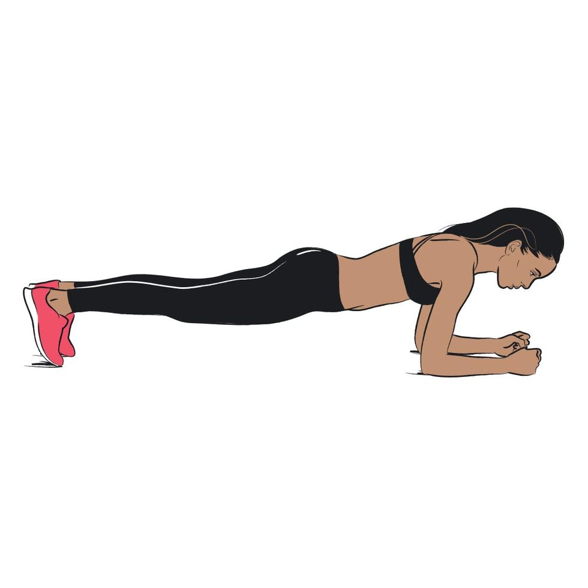
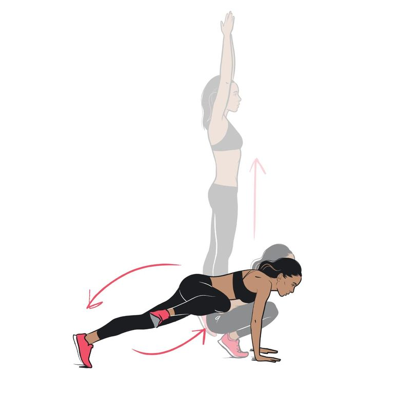
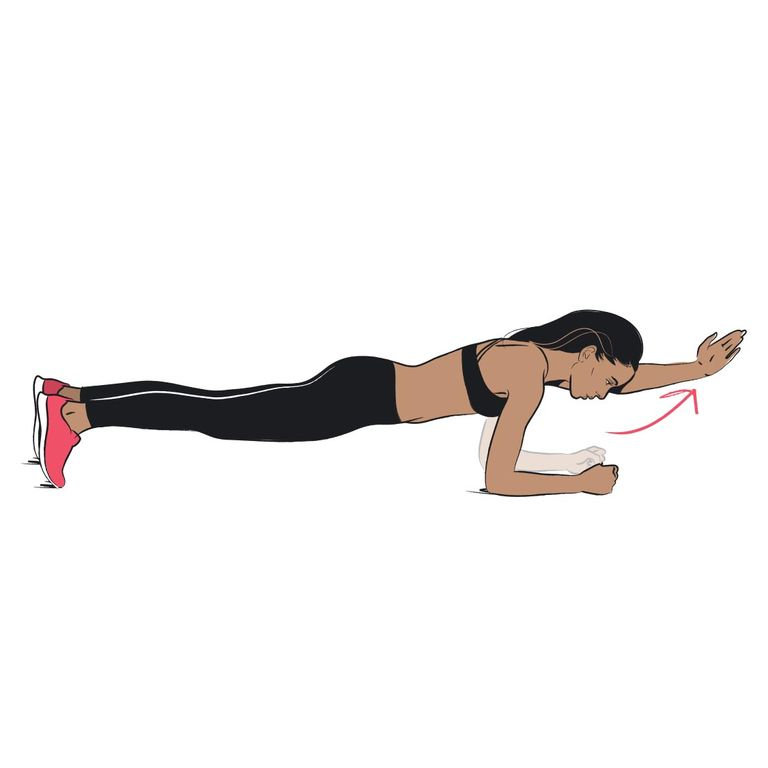

Each week involves a new workout, more challenging than the last.If, like many runners out there, you're taking your workouts indoors at the moment, you'll probably be looking for some inspiration. Here, we've got a 28 day home workout plan from GB heptathlete-turned PT, Louise Hazel. “You can do these body-weight moves anywhere and each circuit takes just 20 minutes, so no excuses!”
How does the programme work?
Each week involves a new workout, more challenging than the last. If you’re a beginner, do weeks 1 to 4; if you’re in the middle, start at week 2, doing it twice before doing weeks 3 and 4; if you’re a pro, do week 2, 3, 4 then 4 again. Do each move for 30 seconds for a circuit. Do 3 circuits with 2-3 mins rest in-between. Aim to do the workout 3-4 times a week around your running plan.
WEEK ONE
This week is a total-body workout to kick-start your metabolism and get you perfecting lean-muscle-building moves.
-
Side to side
(a) Sit on the floor, bend your knees to 90° and raise your heels off the floor, into what we call a V-sit position. Comfortable, isn’t it?
(b) With arms outstretched in front, twist your torso around and tap your fingers on the floor behind your bum. Alternate side to side.
Tricep dips
(a) Pop a chair behind you and lower yourself into a sitting position, with your hands on the seat, arms straight and your knees bent at 90°. (b) Slowly bend your elbows and lower your hips towards the floor until your triceps are parallel with the floor, then return to the start.
Squats
Planks

(a) Get into a plank position, with your back, pelvis and head aligned.(b) Brace that core!
Burpees
(a) Start by standing upright and explosively jump with arms up, then crouch down to the floor.(b) Spring your legs out behind you into a plank, then jump back into that crouch and repeat. Pump it up!
 (a) Stand upright with your feet shoulder-width apart. Bend your knees and push your hips back and down, keeping your heels in constant contact with the floor.(b) Push back up to standing.
(a) Stand upright with your feet shoulder-width apart. Bend your knees and push your hips back and down, keeping your heels in constant contact with the floor.(b) Push back up to standing.
WEEK TWO
Coping? “Now we up the ante with tougher, more advanced body-weight moves,” Hazel says.Alternate V-sits
T Press-Ups
(a) Get into plank. Focusing your weight through your palms and toes, lower your chest to the floor.(b) As you push up, rotate to one side and extend one arm towards the ceiling with your palm facing outwards. Then return to plank and repeat on the other side. Keep at it!
Forward Lunges
(a) Power stance – stand with feet shoulder-width apart, hands on hips. (b) Step forward about 1m with your knee bent, while lowering your hips to the floor. Return to the start position and repeat on the other leg.
Walking Planks
(a) Get into good old plank again. (b) Lift one foot off the floor, then switch to the other foot. March on.
Spiderman Burpees

a) Jump up vertically with arms up before landing crouched down. (b) Spring into plank, bend one knee to your elbow, return to plank. Do the other knee. Keep alternating.
 (a) Lie on your back and bring your arms up overhead, with your legs stretched out. Try to keep your body as straight as possible. Ready?(b) Raise your right leg to 90°, then bring both arms up to touch your right toe at the same time. Repeat on the left, then keep alternating.
(a) Lie on your back and bring your arms up overhead, with your legs stretched out. Try to keep your body as straight as possible. Ready?(b) Raise your right leg to 90°, then bring both arms up to touch your right toe at the same time. Repeat on the left, then keep alternating.
WEEK THREE
We’re upping the complexity and resistance. Grab 2-3kg dumbbells and get on it.SPIDERMAN
a) Plank position again!(b) Bend one knee and raise it up and out to your elbow, then return to plank and repeat on the other side.
DB LATERAL RAISES
(a) Hold a dumbbell in each hand, with your feet shoulder-width apart. (b) Slowly raise your arms out in front of you to 90°. Return to start, then raise your arms out to the side.
DB SIDE LUNGES
a) Stand with feet shoulder-width apart with your arms by your sides and a dumbbell in each hand.(b) Step 1m to your left and bend your front knee, lowering your hips. Return to start and do the other side.
DB SIDE PLANKS
(a) On your side, hold a dumbbell. Prop yourself up into a side plank. (b) Bring the weight up then back down. Swap sides.
BURPEE PRESSES
a) Jump up with arms overhead, then tuck into a crouch position.(b) Spring into plank, bend your elbows to lower your chest, return to a tuck and repeat this sequence.
WEEK FOUR
It’s the final week, and you’re flying! These killer moves will carve that sculpted physique.ROWS
(a) Sit with knees bent at 90°, feet off the floor and arms outstretched. (b) Extend your legs straight out in front of you while bending your elbows back behind your body in a rowing action and repeat
DB PRESS ROW
(a) Dumbbells in hands, do a plank.(b) Lower your chest within 1in of the floor, then as you push back up, bend one elbow up. Swap sides.
-
DROP SQUATS
(a) Stand, feet at shoulder width. (b) Bend your knees and push your hips back, keeping your heels on the ground and adding a little two-footed bounce between each squat.
3-POINT PLANK

(a) Start in a low plank position.(b) Raise one arm off the floor and out in front for 15 secs. Repeat on the other side, then alternate.
NAUGHTY BURPEES
 (a) Standing, jump up, then crouch down before springing into a plank. (b) Spring your feet forward, then jump out to the right, then jump to the left. This all counts as one move.
(a) Standing, jump up, then crouch down before springing into a plank. (b) Spring your feet forward, then jump out to the right, then jump to the left. This all counts as one move.